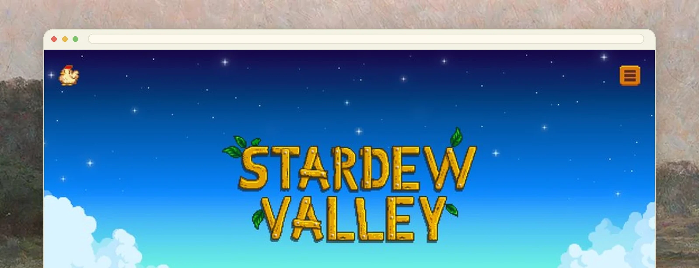
Personal
Stardew Companion
A single-page fan guide: look up any of the 34 villagers' favourite gifts, click around town to learn what each building is for, and play one of four arcade cabinets built into the page. No framework and no build step, styled closely enough that it feels like it belongs in the game.
The wiki is complete and unpleasant
Everything about this game is documented somewhere. The problem is that the documentation is a wiki, and a wiki is optimised for completeness rather than for the question you actually have, which is almost always “what does this one person want”, asked while the game is paused.
So the whole design brief was: one page, no navigation, answer that question in under three seconds.
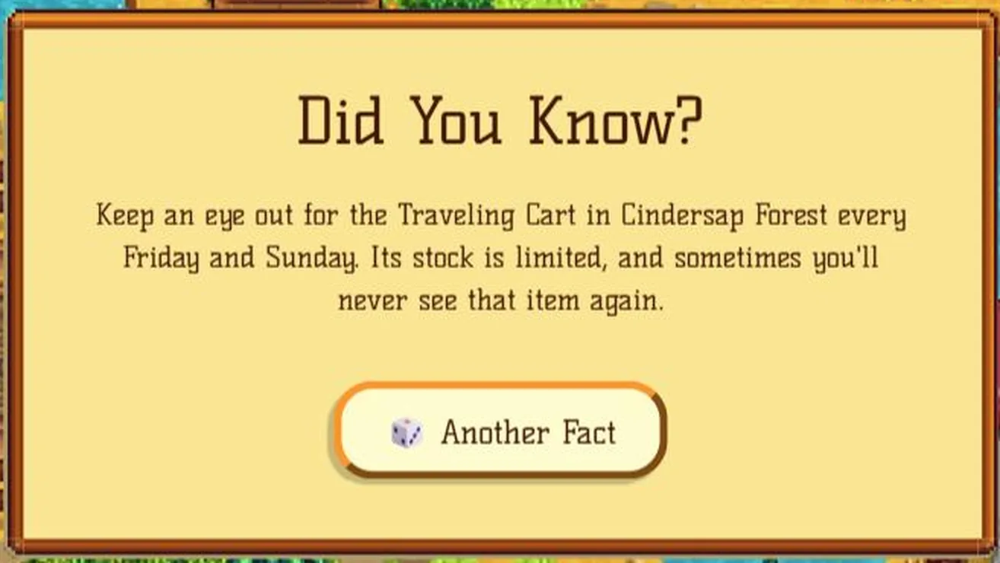
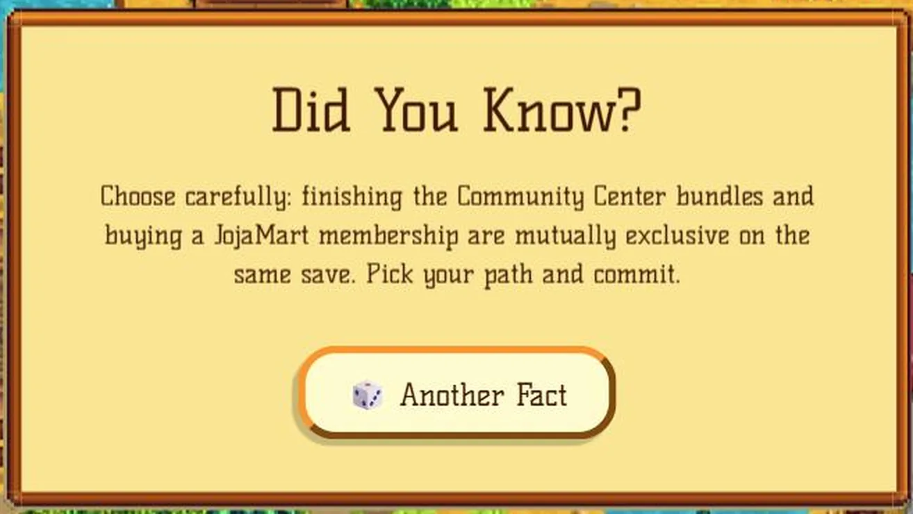
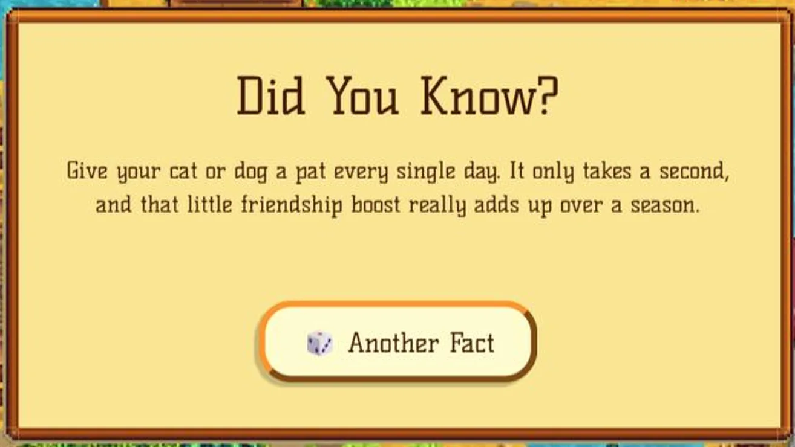
Borrowing a visual language without stealing assets
The thing that makes it feel like the game is not any single asset. It is the palette, the chunky border radii, the drop shadows on the panels and the specific weight of the type. Get those right and hand-drawn elements read as belonging; get them wrong and a real asset still looks pasted in.
No build step is a constraint I set on purpose. A fan guide that needs npm install to change a gift list is a fan guide that stops being updated.
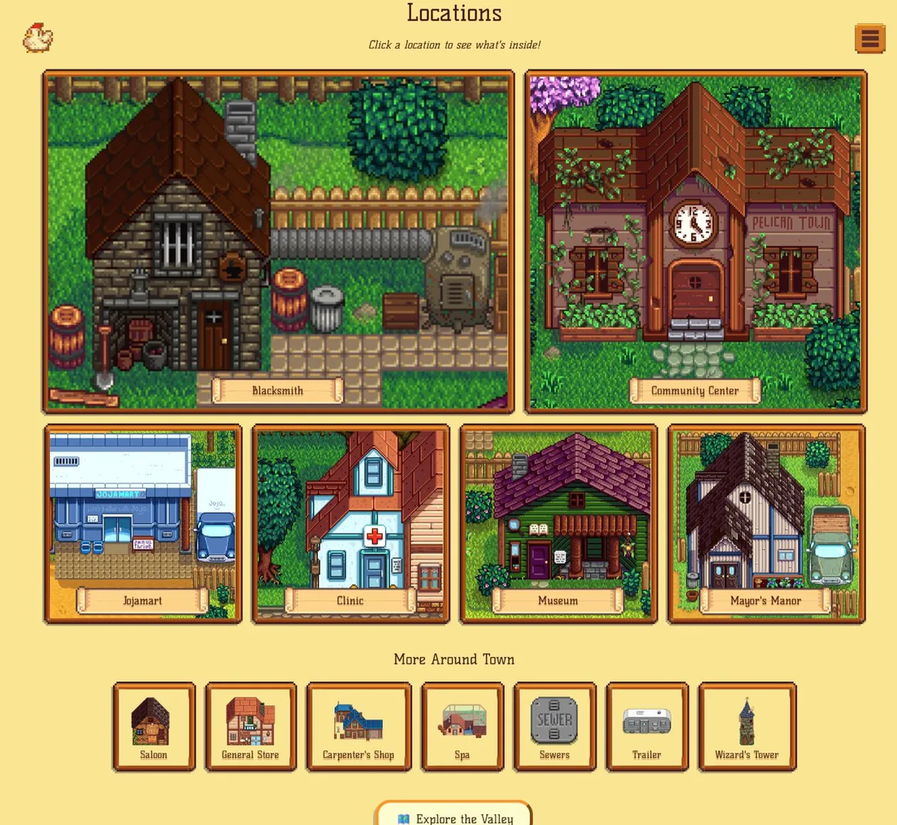
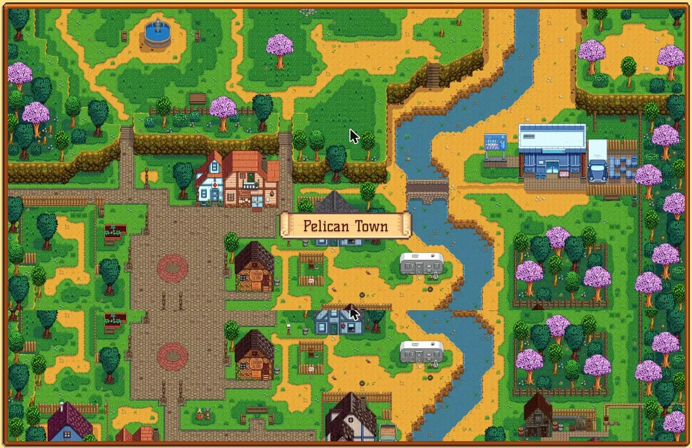
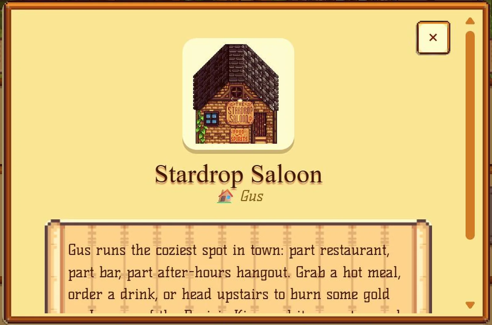
Facts, sprites and code are not the same thing
The gift lists are game data, so a one-time Node script parsed them out of a mirrored fan site rather than my typing 34 characters' worth of preferences by hand. Portraits, item icons and location photos come from the same source and the official wiki, used the way a fan guide typically uses them.
Game code is a different category, and the arcade below draws the line in both directions. Prairie King's shooter logic is an original recreation, because the original is somebody's work in a way a gift list is not. The fishing catch-bar, on the other hand, is a deliberate port of a specific open reference implementation at its own constants, because approximating it did not feel right and matching it exactly was the entire point.
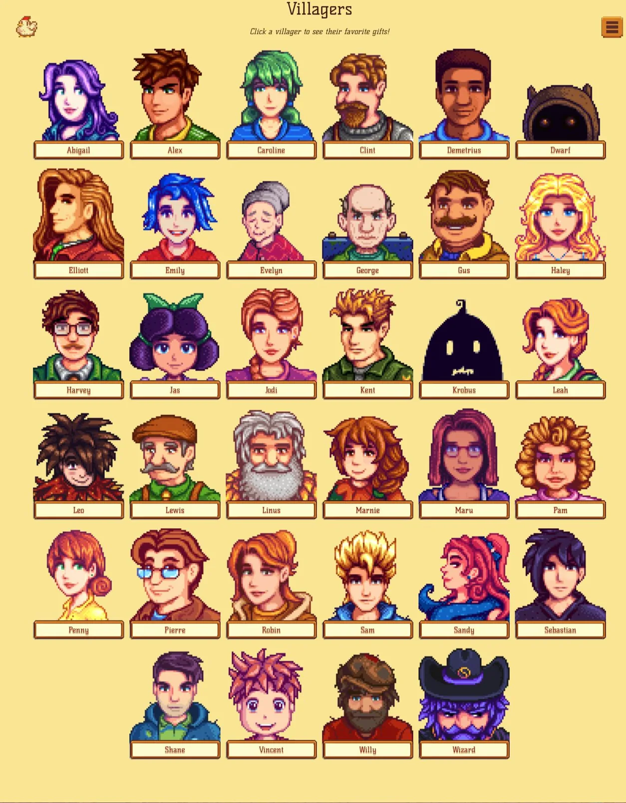
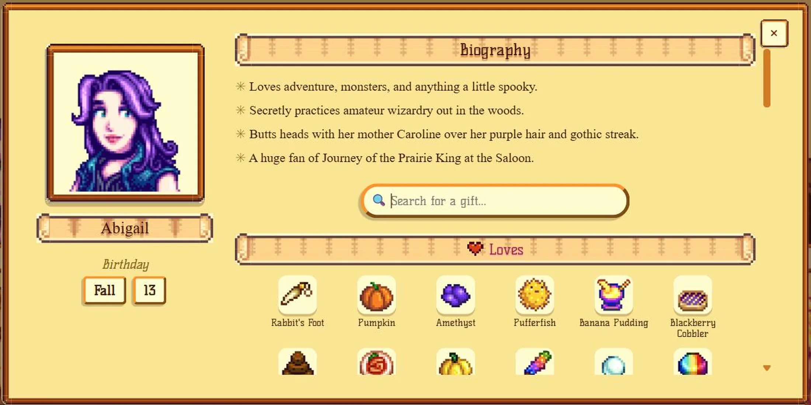
A friendship sprite lifted from the game, not an emoji standing in for one.
Four cabinets and no game engine
Half of this project is not a guide at all. Four playable cabinets sit on the same page, each a plain canvas element with its own loop, and none of them uses a framework or an engine.
They are also the reason the page does not cost anything while you are reading it. All four pause their render loop through an IntersectionObserver the moment they scroll out of view, and the rhythm game suspends its audio context at the same instant, so closing the modal actually stops the music rather than leaving it playing under everything else.
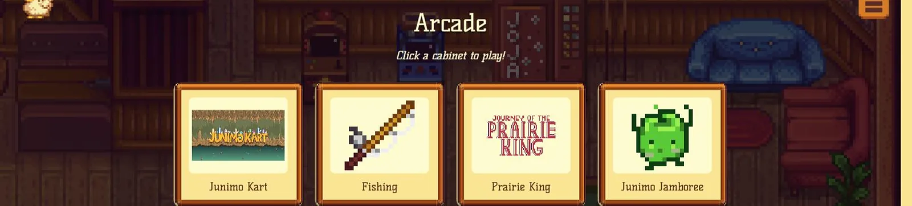
One canvas each, one loop each, and no engine under any of them.
One source for the song and the chart
Junimo Jamboree has no audio track. A short hand-written motif is arranged into a sixteen-measure structure at load, and that same generated chart drives both the falling notes and the oscillators, so the beatmap and the music are the same object rather than a track with a chart hand-placed on top of it. They cannot drift apart because there is nothing to drift.
Note judgment and the falling-note animation are both timed off the audio context's own clock rather than animation-frame timestamps, which is the difference between a rhythm game that feels tight and one that feels slightly wrong in a way players cannot name. Because the whole chart is known up front, every oscillator is scheduled in one pass at load instead of through the lookahead scheduler that Web Audio sequencing usually needs.
Difficulty changes note density and timing windows. It does not change the song.
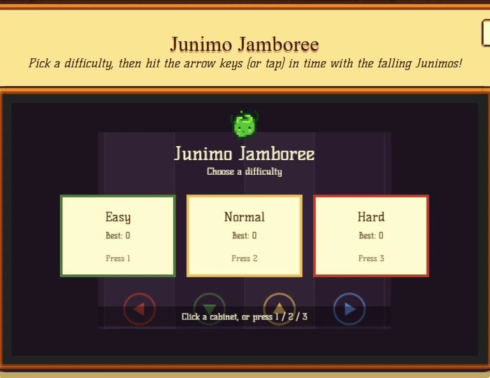
Ports have tick rates
Matching an existing visual language closely is much harder than designing freely, and much better practice. You cannot fall back on taste; you have to measure what is actually there and reproduce it, which is the same skill an audit of a design system needs.
The sharpest version of that lesson was numeric. The first pass at the catch-bar ran its physics once per animation frame, which at 60fps came out about 20% faster than intended, and every constant I then re-tuned by feel took it further from the thing I was trying to match. The fix was not a better constant, it was running the loop at the tick rate the original used.
The other one was structural. The popups rendered off-screen for a day because the page's parallax puts a perspective on the main element, which quietly makes it the containing block for any fixed-position child instead of the viewport. The modals had to live outside it in the DOM. Nothing about the symptom pointed at the cause.